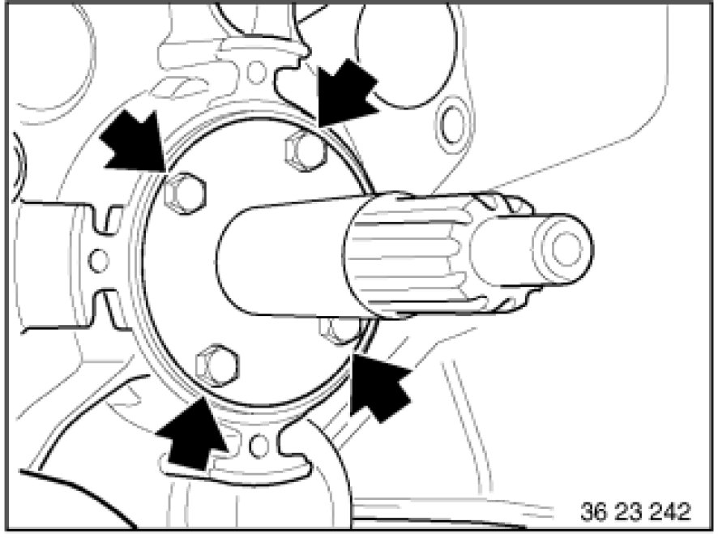

23 11 608 Replacing Guide Tube for Clutch Release Unit (GS6-17BG/DG)
23 11 608 - Replacing guide tube for clutch release unit (GS6-17BG/DG)

Necessary preliminary tasks:
- Remove transmission 23 00 017 Removing and Installing Transmission (GS6-17BG)
- Remove clutch controller Service and Repair and release lever from guide tube.

Release screws.
Remove guide tube.
Tightening torque: 23 11 2AZ [1][2]23 14 Electrical Fittings.
Installation Note:
Replace screws.
Clean new guide tube.
Guide surface must be clean (no labels/stickers or residual adhesive, etc.).